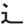

| DOU |
|
I twisted my neck looking at a hot jogger moving fast down the street Then I was like all holding my neck going, D'OH |
| みち |
smaller street (BOOBOO: bigger streets are 通り (どうり))
★★★★★ |
| 歩道 | |
| 近道 |
a short-cut
★★★☆☆
KUNKUN
|
| ｘｘｘ 道 |
"way of xxx" ★★★☆☆ SUF DOU can also be used as a suffix, meaning 'method and philosophy of XXX' as can be seen in all this martial arts stuff: 柔道、剣道、武士道 (judo, kendo, bushido). . . as well as tea ceremony, and flower arranging: 茶道、 華道 |
| 武道 |
martial arts
★★☆☆☆
|
| 道徳 |
moral principles
★☆☆☆☆
morals in general - universal principles like "don't cheat, don't kill" - as opposed to your own personal rules, like "I don't smoke, I don't watch Julia Roberts films." When newspapers talk about "moral education in the classroom," they use 道徳. |
| 柔道 |
| Meaning | Hint | Radical | |
|---|---|---|---|
| 路 | road | FEET | 足 |
| 道 | street | MOVE |  |
The road is under your FEET, but you MOVE along the street. Word.
| Meaning | Hint | Radical | |
|---|---|---|---|
| 道 | street | HORNY | |
| 題 | topic | DAY | 日 |
HORNY guys is on the street.
Every DAY they have a new topic of sexual harassment.
|
machine
機械 器械 そうち 器具 道具 |
|
morals, ethics
倫理 倫理学 道徳 価値観 信念 |
|
report
報告 報道 レポート 情報 |
|
road
道路 通り 街道 道 |
 KANJIDAMAGE
KANJIDAMAGE